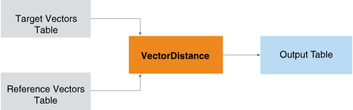

VectorDistance
The VectorDistance function takes a table of target vectors and a table of reference vectors and returns a table that contains the distance between each target-reference pair.

Information retrieval and text mining applications use the vector distance between the Term Frequency Inverse Document Frequency (TF-IDF) representations of two documents to measure the similarity of their subject matter.
VectorDistance Syntax
Version 1.3
SELECT * FROM VectorDistance (
ON target_input_table AS TargetTable PARTITION BY target_id_column [,...]
ON ref_input_table AS ReferenceTable DIMENSION
USING
TargetIDColumns ({ 'target_id_column' | target_id_column_range }[,...])
TargetFeatureColumn ('target_feature_column')
[ TargetValueColumn ('target_value_column') ]
[ RefIDColumns ({ 'ref_id_column' | ref_id_column_range }[,...])
[ RefTableSize ({ 'SMALL' | 'LARGE' }) ]
[ RefFeatureColumn ('ref_feature_column') ]
[ RefValueColumn ('ref_value_column') ]
[ DistanceMeasure ({ 'cosine' | 'euclidean' | 'manhattan' | 'binary' }[,...])]
[ IgnoreMismatch ({'true'|'t'|'yes'|'y'|'1'|'false'|'f'|'no'|'n'|'0'}) ]
[ ReplaceInvalid ({ 'PositiveInfinity' |'NegativeInfinity' | custom })]
[ TopK (k) ]
[ MaxDistance (threshold [,...]) ]
) AS alias;VectorDistance Syntax Elements
- TargetIDColumns
- Specify the names of the columns that comprise the target vector identifier. You must partition the target input table by these columns and specify them with this syntax element.
- TargetFeatureColumn
- Specify the name of the column that contains the target vector feature name (for example, the axis of a 3-D vector).NoteThe function drops any entry that has a NULL value in a feature_column.
- TargetValueColumn
- [Optional] Specify the name of the column that contains the value for the target vector feature. If you omit this syntax element, each feature (that is, each row) has the target value 1.NoteThe function drops any entry that has a NULL value in a value_column.
- RefIDColumns
- [Optional] Specify the names of the columns that comprise the reference vector identifier.
- RefFeatureColumn
- [Optional] Specify the name of the column that contains the reference vector feature name.NoteThe function drops any entry that has a NULL value in a feature_column.
- RefValueColumn
- [Optional] Specify the name of the column that contains the value for the reference vector feature.NoteThe function drops any entry that has a NULL value in a value_column.
- RefTableSize
- [Optional] Specify the size of the ReferenceTable. Specify 'LARGE' only if the ReferenceTable does not fit in memory, because 'SMALL' allows faster processing.
- DistanceMeasure
- [Optional] Specify the distance measures that the function uses.NoteThe binary distance between two vectors is 1 if the vectors are identical and 0 otherwise.
- IgnoreMismatch
- [Optional] Specify whether to drop mismatched dimensions. If DistanceMeasure is 'cosine', this syntax element is 'false'. If you specify 'true', two vectors with no common features become two empty vectors when only their common features are considered, and the function cannot measure the distance between them.
- ReplaceInvalid
- [Optional] Specify the value to return when the function encounters an infinite value or empty vectors. For custom, you can supply any DOUBLE PRECISION value.
- TopK
- [Optional] Specify, for each target vector and for each measure, the maximum number of closest reference vectors to include in the output table. For k, you can supply any INTEGER value.
- MaxDistance
- [Optional] Specify the maximum distance between a pair of target and reference vectors. If the distance exceeds the threshold, the pair does not appear in the output table.
VectorDistance Input
TargetTable Schema
This table has the target vectors.
| Column | Data Type | Description |
|---|---|---|
| target_id_column | Any | [Column appears once for each specified target_id_column.] All or part of target vector identifier. |
| target_feature_column | Any except VARBYTE(n) | Feature name of target vector. |
| target_value_column | SMALLINT, INTEGER, BIGINT, NUMERIC, or DOUBLE PRECISION | Value of target vector. |
ReferenceTable Schema
This table has the reference vectors.
| Column | Data Type | Description |
|---|---|---|
| ref_id_column | Any | [Column appears once for each specified ref_id_column.] All or part of reference vector identifier. |
| ref_feature_column | Any except VARBYTE(n) | Feature name of reference vector. |
| ref_value_column | SMALLINT, INTEGER, BIGINT, NUMERIC, or DOUBLE PRECISION | Value of reference vector. |
VectorDistance Output
Output Table Schema
| Column | Data Type | Description |
|---|---|---|
| target_target_id_column | Same as in TargetTable | [Column appears once for each specified target_id_column.] All or part of target vector identifier. |
| ref_ref_id_column | Same as in ReferenceTable | [Column appears once for each specified ref_id_column.] All or part of reference vector identifier. |
| type | VARCHAR | Distance measurement type. |
| distance | DOUBLE PRECISION | Distance between target vector and reference vector. |
VectorDistance Examples
VectorDistance Examples Input
Raw Input
| Attribute | Description |
|---|---|
| CallDuration | Total time spent on telephone calls (in minutes) |
| SMS | Number of Short Message Service (SMS) messages sent and received |
| DataCounter | Data consumed (in megabytes) |
| UserID | CallDuration | SMS | DataCounter |
|---|---|---|---|
| 1 | 25000 | 24 | 4 |
| 2 | 40000 | 27 | 5 |
| 3 | 55000 | 32 | 7 |
| 4 | 27000 | 25 | 5 |
| 5 | 53000 | 30 | 5 |
The CallDuration values are so much higher than other attribute values that they skew the distribution. Normalizing the raw data to the range [0, 1] solves this problem.
Normalized Input
In the following table, the raw input data has been normalized to the range [0, 1] using the Min-Max normalization technique.
| UserID | CallDuration | SMS | DataCounter |
|---|---|---|---|
| 1 | 0.0000333 | 0.1 | 0.2 |
| 2 | 0.5 | 0.4 | 0.4 |
| 3 | 1 | 0.9 | 0.8 |
| 4 | 0.01 | 0.2 | 0.4 |
| 5 | 0.93 | 0.7 | 0.4 |
This technique transforms the value 'a' (in column A) to the value 'b' in the range [C, D], using this formula:
b=((a-minimum_value_in_A)/(maximum_value_in_A-minimum_value_in_A))*(D-C)+C
The following table shows the minimum and maximum values that the formula uses for each input table column.
| Column | Minimum Value | Maximum Value |
|---|---|---|
| CallDuration | 24999 | 55001 |
| SMS | 23 | 33 |
| DataCounter | 3 | 8 |
From the normalized input data, select one or more users as the reference vector; the remaining users are the target vectors. The choice of reference vector depends on the application. For example, if the mobile telephone service is expanding its range to include a new area with similar users, then one or more typical users (with average or median attribute values) can be the reference vector. When the company has identified similar users in the new area, it can send them promotional offers.
Reference and Target Tables for Examples
For these examples, the reference vector is UserID 5.
| UserID | Feature | Value |
|---|---|---|
| 5 | CallDuration | 0.93 |
| 5 | SMS | 0.7 |
| 5 | DataCounter | 0.4 |
| UserID | Feature | value1 |
|---|---|---|
| 1 | CallDuration | 0.0000333 |
| 1 | SMS | 0.1 |
| 1 | DataCounter | 0.2 |
| 2 | CallDuration | 0.5 |
| 2 | SMS | 0.4 |
| 2 | DataCounter | 0.4 |
| 3 | CallDuration | 1 |
| 3 | SMS | 0.9 |
| 3 | DataCounter | 0.8 |
| 4 | CallDuration | 0.01 |
| 4 | SMS | 0.2 |
| 4 | DataCounter | 0.4 |
VectorDistance Example: Default Thresholds
Input
SQL Call
SELECT * FROM VectorDistance(
ON target_mobile_data as TargetTable PARTITION BY UserID
ON ref_mobile_data as ReferenceTable DIMENSION
USING
TargetIdColumns('UserID')
TargetFeatureColumn('Feature')
TargetValueColumn('value1')
DistanceMeasure('Cosine','Euclidean','Manhattan')
) AS dt ORDER BY 1;Output
target_userid ref_userid type distance
------------- ---------- --------- --------------------
1 5 euclidean 1.1246501958870991
1 5 manhattan 1.7299667
1 5 cosine 0.45486517827424
2 5 manhattan 0.73
2 5 euclidean 0.5243090691567331
2 5 cosine 0.02608922985452755
3 5 cosine 0.024150544155866593
3 5 manhattan 0.67
3 5 euclidean 0.4526588119102511
4 5 manhattan 1.42
4 5 euclidean 1.047091209016674
4 5 cosine 0.43822243299800046
The following table (which is not output by the VectorDistance function) shows the distances of the target vectors from the reference vector (UserID 5) and their similarity ranks. The shorter the distance, the higher the similarity rank. Similarity rank is independent of measure—if relative distances are shorter in one measure, they are shorter in all measures. UserID 3 is most similar to UserID 5.
| target_userid | Cosine Distance | Euclidean Distance | Manhattan Distance | Similarity Rank |
|---|---|---|---|---|
| 1 | 0.454865179 | 1.124650195 | 1.7299667 | 4 |
| 2 | 0.02608923 | 0.524309065 | 0.72999999 | 2 |
| 3 | 0.024150545 | 0.452658811 | 0.66999999 | 1 |
| 4 | 0.438222434 | 1.047091208 | 1.41999999 | 3 |
Download a zip file of all examples and a SQL script file that creates their input tables from the download tab  in the left pane.
in the left pane.
VectorDistance Example: Nondefault Thresholds
Input
This example uses the MaxDistance syntax element to limit the output to target vectors within the specified distances for each measure.
SQL Call
SELECT * FROM VectorDistance(
ON target_mobile_data as TargetTable PARTITION BY UserID
ON ref_mobile_data as ReferenceTable DIMENSION
USING
TargetIdColumns('UserID')
TargetFeatureColumn('Feature')
TargetValueColumn('value1')
DistanceMeasure('Cosine','Euclidean','Manhattan')
MaxDistance(0.03,0.8,1.0)
) AS dt ORDER BY 1;Output
Only UserID 2 and UserID 3 meet the threshold criteria.
target_userid ref_userid type distance
------------- ---------- --------- --------------------
2 5 manhattan 0.73
2 5 euclidean 0.5243090691567331
2 5 cosine 0.02608922985452755
3 5 manhattan 0.67
3 5 euclidean 0.4526588119102511
3 5 cosine 0.024150544155866593
Download a zip file of all examples and a SQL script file that creates their input tables from the download tab in the left pane.